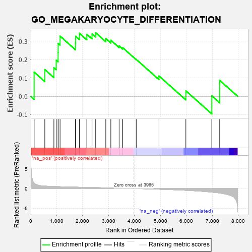
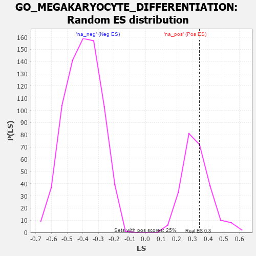

| | | Dataset | 7d |
| Phenotype | NoPhenotypeAvailable |
| Upregulated in class | na_pos |
| GeneSet | GO_MEGAKARYOCYTE_DIFFERENTIATION |
| Enrichment Score (ES) | 0.3454436 |
| Normalized Enrichment Score (NES) | 1.0607632 |
| Nominal p-value | 0.344 |
| FDR q-value | 0.6615355 |
| FWER p-Value | 1.0 |
Table: GSEA Results Summary

Fig 1: Enrichment plot: GO_MEGAKARYOCYTE_DIFFERENTIATION
Profile of the Running ES Score & Positions of GeneSet Members on the Rank Ordered List
| PROBE | GENE SYMBOL | GENE_TITLE | RANK IN GENE LIST | RANK METRIC SCORE | RUNNING ES | CORE ENRICHMENT | | 1 | SP3 | | | 131 | 1.391 | 0.1316 | Yes |
| 2 | SRF | | | 542 | 0.615 | 0.1454 | Yes |
| 3 | HMGB2 | | | 892 | 0.507 | 0.1555 | Yes |
| 4 | UBA5 | | | 982 | 0.488 | 0.1962 | Yes |
| 5 | MEF2C | | | 1054 | 0.473 | 0.2377 | Yes |
| 6 | RBM15 | | | 1057 | 0.473 | 0.2877 | Yes |
| 7 | KMT2A | | | 1130 | 0.458 | 0.3274 | Yes |
| 8 | MEIS1 | | | 1723 | 0.351 | 0.2903 | Yes |
| 9 | KMT2E | | | 1730 | 0.350 | 0.3268 | Yes |
| 10 | RBBP5 | | | 1875 | 0.323 | 0.3431 | Yes |
| 11 | CNOT4 | | | 2161 | 0.283 | 0.3373 | Yes |
| 12 | SIN3A | | | 2361 | 0.251 | 0.3390 | Yes |
| 13 | KAT2B | | | 2502 | 0.226 | 0.3454 | Yes |
| 14 | WDR5 | | | 2892 | 0.168 | 0.3144 | No |
| 15 | HDAC1 | | | 3086 | 0.138 | 0.3048 | No |
| 16 | MED1 | | | 3405 | 0.089 | 0.2743 | No |
| 17 | KMT2C | | | 3544 | 0.069 | 0.2642 | No |
| 18 | TAL1 | | | 4064 | -0.018 | 0.2009 | No |
| 19 | EP300 | | | 4941 | -0.186 | 0.1105 | No |
| 20 | GABPA | | | 5977 | -0.464 | 0.0297 | No |
| 21 | DPY30 | | | 6976 | -0.923 | 0.0024 | No |
| 22 | CIB1 | | | 7280 | -1.152 | 0.0869 | No |
Table: GSEA details [plain text format]

Fig 2: GO_MEGAKARYOCYTE_DIFFERENTIATION: Random ES distribution
Gene set null distribution of ES for GO_MEGAKARYOCYTE_DIFFERENTIATION